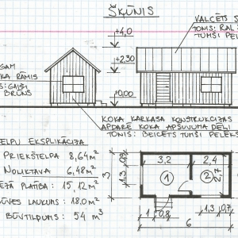

<!DOCTYPE html>
<html>
<head>
<title>Kur var izmantot?</title>
</head>
<body>

</body>
</html><p>
    <center><font size "30">Kur var izmantot zīmēšanu?</font></p>
        <p>Kur var izmantot zīmēšanu jūs dopmājat. Zīmēšanu var izmantot daudzās vietās to var izmantot darbā mājās būvniecībā un citās vietās!</p>
        <p>Būvniecībā viss īpašāk to vajaga zīmēšanu lai taisītu mājau skices vai uznākušos projektus. Lielāko daļu tur ir iesaistīta zīmēšana. </p>
        <p>Zīmēšanu var izmantot biznesos arī lai skicētu prodektus vai ko kādus dizainus likt uz drēbēm.</p>
        <p><a href="zimesana5.html">Šeit jūs uzināsiet cik zīmēšanas varēs maksāt kopā! </a></p>

        
        